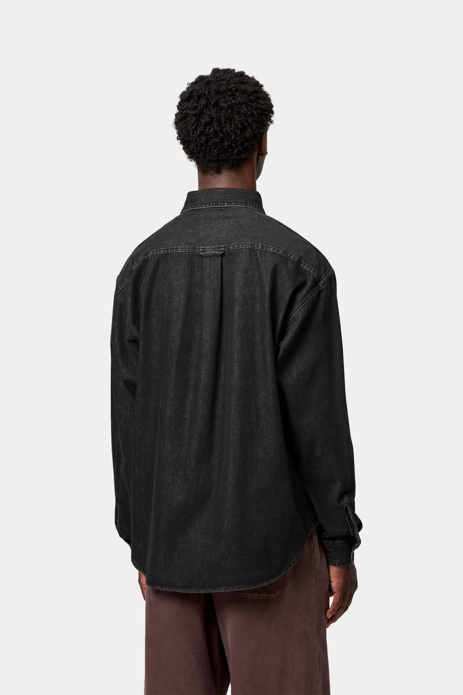
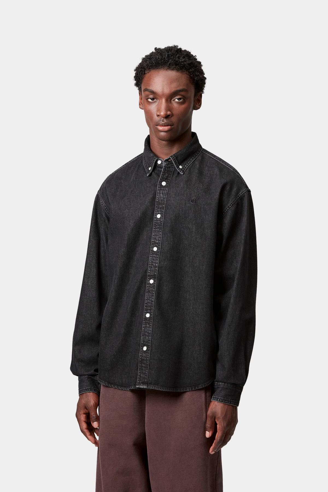
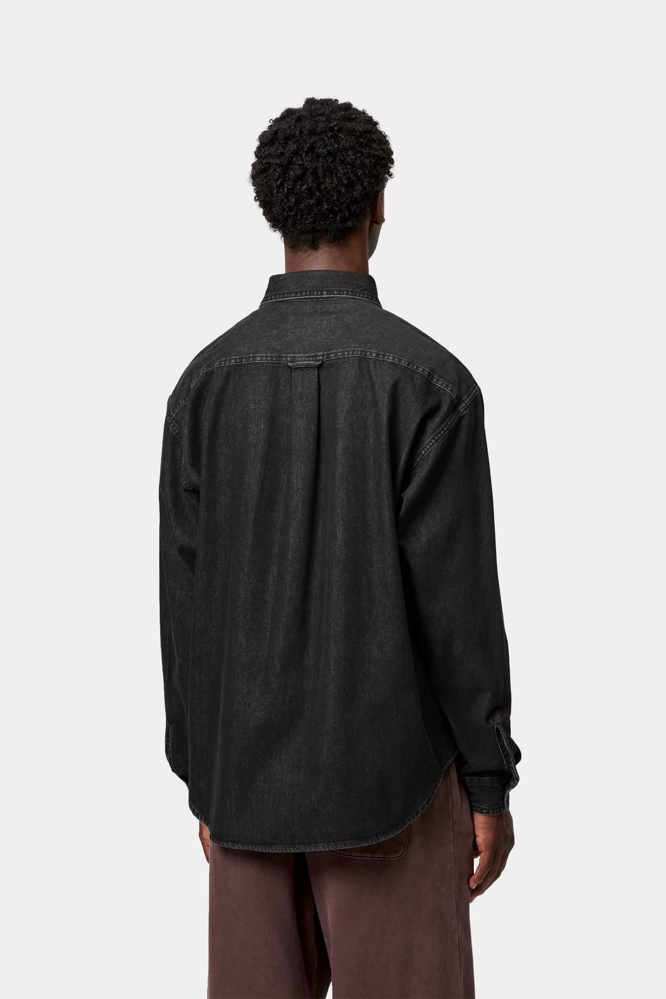
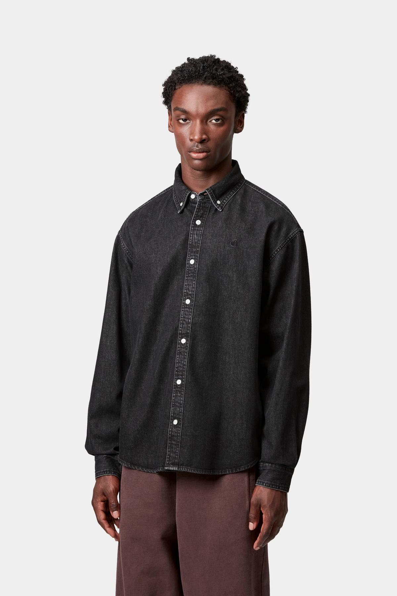

L/S Lucas Shirt
Description
La chemise 'Lucas' est confectionnée en denim de coton semi-épais. De coupe loose, elle est boutonnée à l'avant et au col. Le logo 'C' est brodé sur la poitrine. 100 % coton Coupe loose Col boutonné Logo 'C' brodé Le modèle mesure 1,83 m et porte la taille M Adresse du fabricant: Work in Progress Textilhandels GmbH Hegenheimer Strasse 16 79576 Weil am Rhein Allemagne Contact: info@carhartt-wip.com Contact: info@carhartt-wip.com